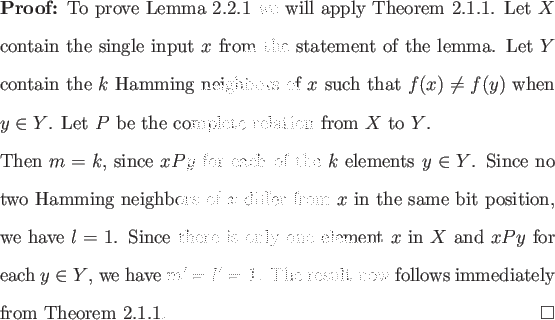

The sensitivity of an input x of a function f is the number of
Hamming neighbors y of x such that
f (x)  f (y). We will use
the following lemma to establish lower bounds for functions based
solely on their sensitivity for a particular input.
f (y). We will use
the following lemma to establish lower bounds for functions based
solely on their sensitivity for a particular input.

This lemma will not in general provide us with the best lower bound that can be attained from Ambainis' Theorem 2.1.1: we are maximizing m/l, but we make no attempt to maximize m/l. The strongest results of Ambainis' Theorem frequently arise from maximizing both. We will maximize both when dealing with partially symmetric functions in Theorem 2.5.1 and graph connectivity in Theorem 3.2.1. The singleton class of functions described in Sections 2.3 and 2.4 is a class for which Lemma 2.2.1 obtains optimal results.